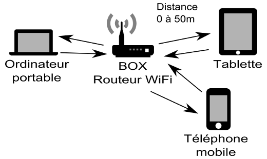
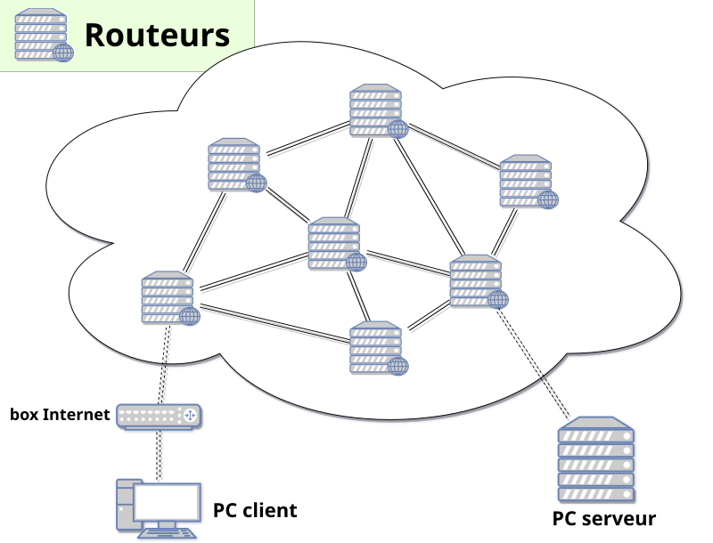
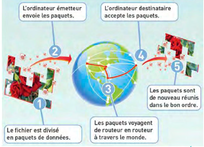
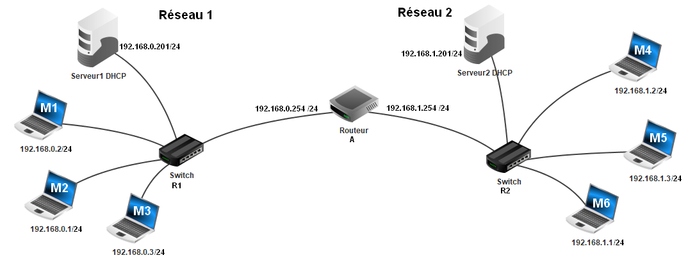
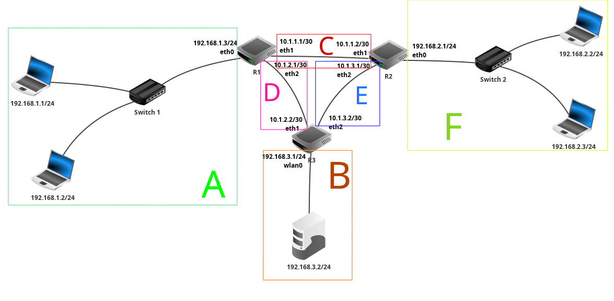

Version PDF de ce cours
- resume_cours_trous.pdf - version du cours à trous,
- resume_cours.pdf - version du cours complété.
Cours - Internet¶
Définition d'Internet¶
L'essentiel
Internet constitue un vaste réseau de machines interconnectées (c'est un réseau de réseaux, un réseau mondial constitué de nombreux sous-réseaux locaux et régionaux), à travers lequel circulent d'énormes volumes de données, atteignant actuellement environ 168 millions de téraoctets par mois. Les échanges d'informations entre ces machines s'effectuent au moyen de requêtes, où l'ordinateur émettant une requête est désigné comme client, tandis que celui y répondant est qualifié de serveur.
Les données transférées d'un point à un autre peuvent inclure des textes, des images, des vidéos, et d'autres types d'informations.
Les dispositifs connectés à Internet, tels que les ordinateurs, les serveurs, et autres équipements, communiquent entre eux en envoyant et recevant des informations. Cette communication peut prendre diverses formes, comme la navigation sur le web, l'envoi de courriels, le partage de fichiers, etc.
Clients et serveurs
Les machines utilisent des requêtes pour demander des informations spécifiques à d'autres machines. Une requête est essentiellement une demande envoyée d'un dispositif (appelé client) à un autre (appelé serveur) pour obtenir des données ou effectuer une action particulière.
Client : Un client est un dispositif, généralement un ordinateur, qui initie une demande en envoyant une requête. Les clients demandent des informations ou des services à d'autres dispositifs sur le réseau.
Serveur : Un serveur est un dispositif qui répond aux requêtes des clients en fournissant les informations demandées ou en effectuant l'action spécifiée. Les serveurs jouent un rôle crucial dans le fonctionnement d'Internet en hébergeant et en distribuant des données aux utilisateurs.
Exemple : accéder à une page web
- Client (Navigateur Web) :
- L'utilisateur ouvre un navigateur web (client) sur son ordinateur.
- Il entre l'adresse URL d'une page web dans la barre d'adresse du navigateur.
- Émission de la requête par le client :
- Le navigateur envoie une requête au serveur web hébergeant la page web demandée. Cette requête contient des informations sur le type de contenu souhaité et d'autres détails.
- Serveur Web :
- Le serveur web reçoit la requête du navigateur client.
- Il interprète la requête et identifie la page web demandée.
- Traitement de la requête par le serveur :
- Le serveur web récupère la page web demandée à partir de son stockage ou génère dynamiquement le contenu en fonction des données disponibles.
- Réponse du Serveur au Client :
- Une fois la page web prête, le serveur envoie une réponse au navigateur client.
- La réponse contient le contenu de la page web ainsi que des informations supplémentaires telles que le code de statut HTTP, les en-têtes, etc.
- Affichage du Contenu par le Client (Navigateur) :
- Le navigateur client reçoit la réponse du serveur.
- Il interprète le contenu reçu (qui peut inclure du HTML, des images, des scripts, etc.) et l'affiche à l'utilisateur.

Indépendance par rapport au réseau physique¶
L'essentiel
Les ordinateurs sont connectés les uns aux autres par différents moyens, que ce soit à travers des connexions filaires telles que la fibre optique ou l'ADSL, ou via des connexions sans fil comme le Wifi et le Bluetooth. Internet est dissocié du réseau physique grâce à des protocoles de communication, ce qui permet de passer d'un type de connexion à un autre en assurant la fluidité des communications.
À titre d'exemple, un smartphone peut se connecter à Internet en transitant du Wifi d'une box à la 4G d'une antenne, illustrant ainsi la flexibilité offerte par ces protocoles.
Débits de quelques liaisons
| Connexion avec fil | Connexion sans fil |
|---|---|
| Fibre optique: très haut débit, jusqu'à 100 Mo/s (mégaoctets par seconde) |
4G : pour la téléphonie, 10 à 20 Mo/s. |
| ADSL : utilise les lignes téléphoniques, environ 2,75 Mo/s. |
Wifi : jusqu'à 7 Mo/s. |
| Bluetooth : pour connecter des appareils proches par ondes radios, 0,4 Mo/s. |


La circulation des données¶
L'essentiel
Les données sont fragmentées en paquets de bits, et des machines appelées routeurs dirigent ces paquets à travers le réseau jusqu'à leur destination, où ils sont reconstitués. Lorsqu'un routeur reçoit un paquet, il examine l'adresse IP de destination, déterminant ainsi le prochain routeur par lequel le paquet doit transiter pour atteindre sa destination.
Dans un réseau doté de plusieurs liaisons, divers itinéraires sont généralement envisageables. Le routeur sélectionne le chemin optimal en considérant des facteurs tels que l'encombrement du réseau ou d'éventuelles pannes (par exemple, si un câble tombe en panne quelque part sur le réseau, il faudra faire passer les paquets par un autre chemin, les routeurs détermineront alors de nouveaux chemins pour faire transiter les données).
Sur Internet, il existe de nombreux routeurs, et de multiples routes pour transmettre un paquet de données d'un point A à un point B :

La circulation des données sur Internet
Lorsque l'on transmet une donnée à travers le réseau, cette donnée n'est pas transmise d'un coup mais est découpée en plusieurs paquets d'une taille maximale de 1 500 octets.
Ainsi, s'il y a un problème avec le réseau, seuls les paquets perdus doivent être ré-émis, plutôt que l'entièreté de la donnée.

Le rôle des routeurs
Les routeurs permettent de faire le lien entre plusieurs sous-réseaux.
Voici un exemple de réseau, contenant un seul routeur permettant de faire transiter des paquets entre un réseau 1 et un réseau 2 :

Voici un autre exemple de réseau avec trois routeurs :

On distingue 6 sous-réseaux identifiés par les lettres A, B, C, D, E et F.
Les protocoles IP et TCP¶
(en construction...)